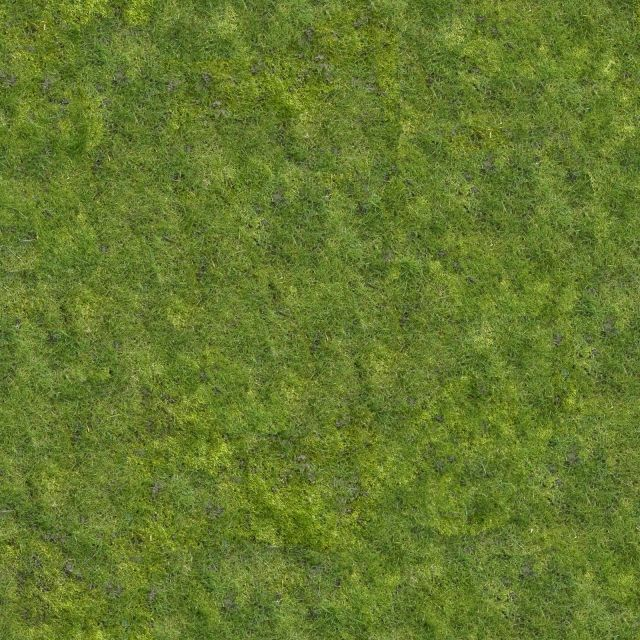

// standalone textures - jpg from turbosquid.com. Available at: https://www.turbosquid.com/3d-models/prototyping-2012-3d/702544:

// 3D models:
// free 3D model from bariacg at turbosquid.com. Available at: https://www.turbosquid.com/3d-models/chicky-mascot-model-1159210
// free 3D model from bariacg at turbosquid.com. Available at: https://www.turbosquid.com/3d-models/3d-dog-cartoon-1213132
// free 3D model from Mount 3D at turbosquid.com. Available at: https://www.turbosquid.com/3d-models/tree-pixel-low-poly-3d-model-1764347
// plants:
// animals: